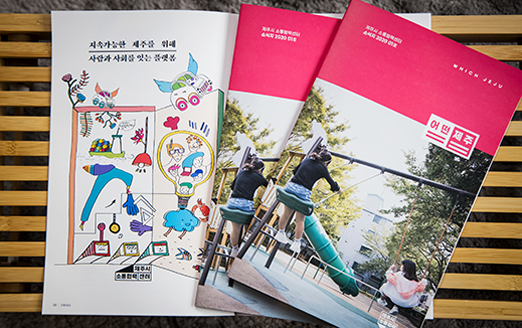
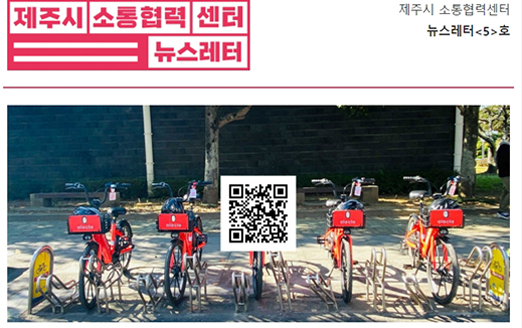

센터소개
홍보 및 주민공감
제주시소통협력센터의 다양한 사업과 지역혁신활동을 홍보하여 지역사회와 주민들의 관심과 참여를 확산시키고
온•오프라인 채널을 활용하여 시민들에게 유의미한 콘텐츠를 전달합니다.
- 온라인 뉴스레터 및 지면 소식지 발행
-
소통협력센터의 사업내용 소식과 기사를 취재•인터뷰하여 콘텐츠를 제작하고 정기적으로 이메일뉴스레터 발행, 온라인 접근성의 한계를 보완하고 지역주민들에게 홍보하기 위해 마을 단위와 지역 책방에 우편 발송
 소식지 <어떤 제주-which Jeju>는 미리 규정하지 않는 태도와 문제를 잠재적 가능성으로 보는 긍정적 시선으로서 의미를 담고 있습니다.
온오프라인 콘텐츠 축적을 시작으로 지식과 정보를 서로 공유하고 확장할 수 있는 방식을 고민합니다.
- 온라인 아카이브 플랫폼 구축 및 운영
-
소통협력센터가 추진하는 사업에 대한 정보와 사례를 공유하는 콘텐츠 운영관리 및 아카이브를 위한 온라인 플랫폼을 구축하여 홍보함으로써 주민참여 촉진.
도내 지역혁신활동 자료를 수집•공유하여 정보를 연결하는 플랫폼을 마련함으로써 소통과 협력을 위한 네트워크 확장